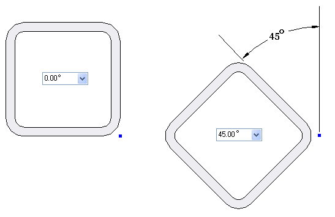
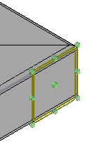
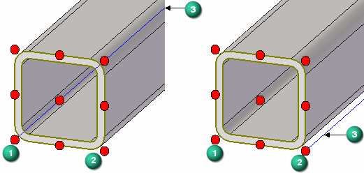
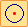
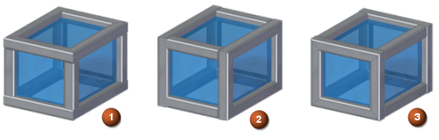
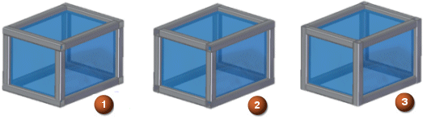
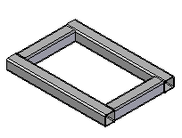

Frame command bar
- Options
-
Displays the Frame Options dialog box.
- Select Path Step
-
Specifies the path segments to use to create the frame.
- Edit Cross Section
-
Specifies the frame component cross section to modify. You can modify the orientation of a cross section, move a cross section using snap points, and zoom to a selected cross section. You can also select a new cross section from a folder or standard parts library to replace an existing cross section.
Use the Arrow keys to shift components, the N key to rotate components, and the F key to flip components.
- Edit End Conditions
-
Specifies the frame component end conditions to modify. You can set the end conditions to mitered, butt1, butt2, extend/trim, or no end condition.
- Cancel/Finish
-
This button changes function as you move through the feature construction process. The Finish button creates the frame. After finishing the frame, you can edit it by reselecting the appropriate step on the command bar. The Cancel button discards all input and exits the command.
- Select Path Step Options
-
- Recently Used Frame Component
-
Displays the names of recently used frame components. You can use the Recently Used Components List option on the Frame Wizard Options dialog box to control the number of components in the list.
- Select Cross Section Components
-
Displays a dialog box for you to select a frame component.
- Locate Body Edges
-
Locates the edges of a body to define a path for the frame.
- Select
-
Sets the path segment selection criteria.
-
Chain–Selects a chain of path segments.
-
Single–Selects a single path segment.
-
Face–Selects a face to define the path segments.
-
Body–Selects the edges in a solid body to define the path segments.
-
- Accept (check mark)
-
Accepts the selection.
- Deselect (x)
-
Clears the selection.
- Edit Cross Section Step Options
-
- Orientation
-
Specifies the angular orientation of the selected cross section(s) relative to the path.

- Define Handle Point
-
Defines a point to which you can reposition a cross section. When you select this button, nine handle points appear around the cross section.

You can reposition a cross section by selecting one of the handle points. The selected cross section shifts to the end of the path for that cross section.
- Show Default Snap Point
-
Displays the default snap point (blue dot).
- Show Current Snap Point
-
Displays the current snap point (green dot).
- Show Cross Section Centroid
-
Displays the centroid of the cross section (yellow dot).
- Show Range Box Points
-
Displays the cross section range box points (red dots).
When you select one of the nine default snap points, the cross section shifts such that the selected snap point connects to the path (3).
The default snap point (1) lies on the path (3) in the left image. If you select handle point (2), then that point moves to the path (3) as shown in the right image.

- Locate Cross Section Sketch KeyPoint
-
Activates the keypoints button , if a single cross section is selected. You can use this button to select any keypoint on the cross section sketch to snap to. The selected keypoint connects automatically to the frame path.
- Keypoints
-
Sets the type of keypoint you can select.

Selects the center and end points.
Selects any keypoint.
Selects an end point.

Selects the center point of a circle or arc.
Selects a midpoint.

Selects a tangency point on an analytic curved face such as a cylinder, sphere, torus, or cone.
Selects a silhouette point.
Selects an edit point on a curve.
Turns off the keypoint location.
- Select New Cross Section Component
-
Selects a new cross section for the frame.
-
If you selected the Browse for component option on the Frame Options dialog box, the Frame dialog box is displayed for you to select the cross section from a local or network folder.
-
If you selected Standard Parts Library on the Frame Options dialog box, the Standard Parts dialog box is displayed for you to select the cross section.
Note:The standard parts database delivered with Solid Edge does not contain frame components. If the currently configured standard parts database contains only the free components, you must select the Browse for component option.
-
- Flip Cross Section
-
Flips the cross section.
- Zoom to Selected Cross Section(s)
-
Zooms the display to the selected cross section(s).
- Finish
-
Creates the frame.
- Edit End Conditions Step Options
-
- Miter
-
Applies a mitered end condition to the adjacent frame components.

- Preferred Plane
-
Miters the frame corners parallel to the preferred plane. You can specify an XY plane (1), a YZ plane (2), or an XZ plane (3).

- Butt
-
Butts one frame member into another frame member that is parallel to the preferred axis.

- Preferred Axis
-
Butts one frame member into another frame member that is parallel to the preferred axis. You can specify the preferred X axis (1), the preferred Y axis (2), or the preferred Z axis (3).

- Miter (Legacy)
-
Applies a mitered end condition to the adjacent frame components. You can use this option if there are more than two segments at a given vertex. This option is only available when editing frames created prior to ST7.
- Butt 1 (Legacy)
-
Applies a butt end condition to adjacent frame components in which the longer segment is butted up against the shorter segment. You cannot use this option if there are more than two segments at a given vertex. This option is only available when editing frames created prior to ST7.
- Butt 2 (Legacy)
-
Applies a butt end condition to adjacent frame components in which the shorter segment is butted up against the longer segment. You cannot use this option if there are more than two segments at a given vertex. This option is only available when editing frames created prior to ST7.

- Extend/Trim
-
Extends or trims the frame component or components connected to the specified end of a plane, face, or body. When you select this option, the following options are available.
- Auto Select All Frame Components
-
Automatically selects all of the frame components connected to the specified end for extension or trim.
- Select Frame Component
-
Selects a frame component connected to the specified end for extension or trim.
- Selection Type
-
Selects a plane, face, or body to which the selected frame component or components should trim or extend.
- None
-
Applies no end condition to the selected components. When this option is selected, these options are available.
- Fillet
-
Applies a fillet to the frame corner.
- Extend by Distance
-
Extends the frame component ends.
Note:You can shorten the length of an extended frame component by entering a negative number in the Value field for the corner extent value.
- Remove
-
Removes the end conditions.
- Value
-
Specifies the fillet radius value or the corner extent value. This option is only available if you select the Fillet or Extend by Distance button on the command bar.
- Next Collinear
-
Specifies the members to form the complete frame member set where there are multiple collinear segments at a junction. This trims the other frame members.
- Weld Gaps
-
Adds a weld gap to the frame ends at the corners and at the ends, extended to a plane, face, or body.
A butt end frame reduces by the weld gap value. At miter ends, each frame reduces by half the weld gap value.
- Clear Overrides
-
Clears the overridden corner treatment at the selected end(s) and sets them to the corner treatment value from the Frame Options dialog box.
How do I
Add a custom frame componentCreate a structural frame
Save a structural frame component
Edit frame end conditions
Edit a frame cross section
Create a frame end cap
Edit a frame end cap
Trim or extend a frame
Create frames with weld gaps
Learn more
Structural frame design workflowSaving frame components
Saving structural frame components
Look up more details
Frame commandFrame Options dialog box
Creating a structural frame
Adding members to a frame
Edit End Conditions command
Edit Cross Sections command
Frame snap points
Frame End Cap command
End Cap Options dialog box
Frame Origin command
Trim/Extend command
Trim/Extend command bar
Adding custom frame components to a local library
Creating a custom structural frame component: best practices
Defining hole locations in a frame